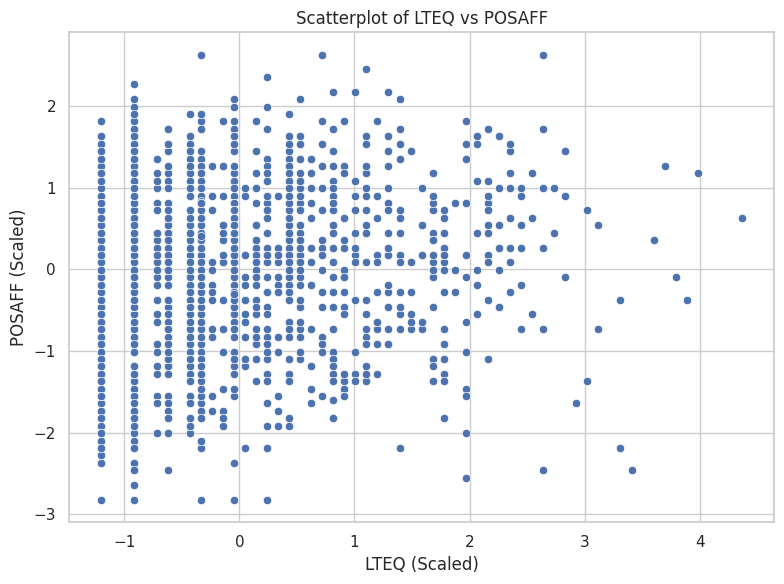
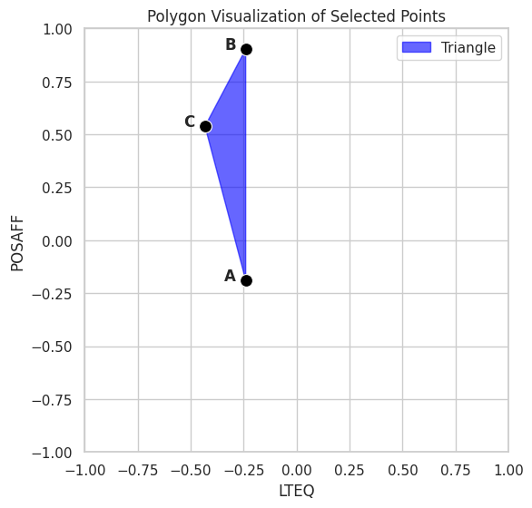
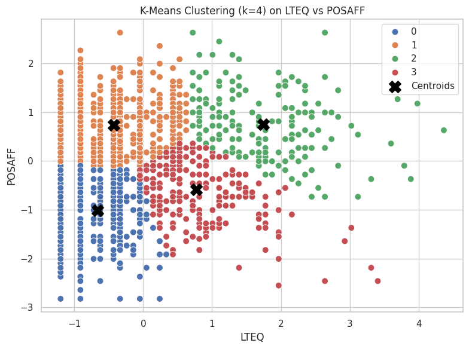
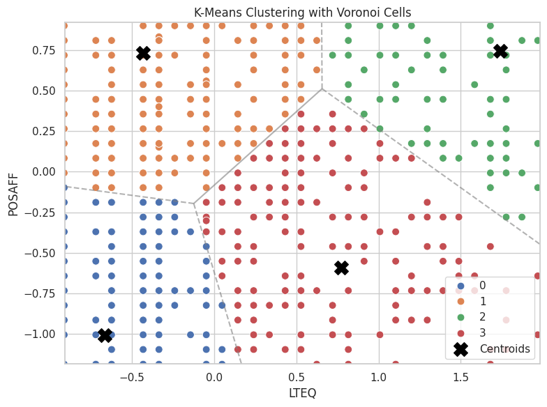
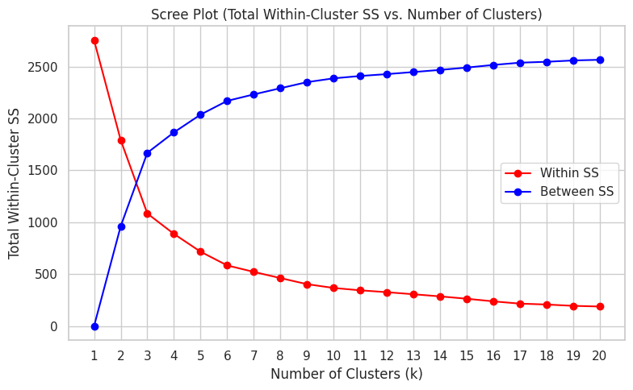

11. Clustering#
Course Website
Clustering is one of the tools used in classification schemes. It mimics ??? from nature.
Tip
Clustering reflects a deeply natural behavior — the human and animal tendency to group things based on perceived similarity, even without explicit labels. While KNN and decision trees learn from labeled examples to make predictions, clustering works in the absence of such guidance. It asks: what patterns or groupings emerge purely from the structure of the data itself? In this way, clustering functions as an exploratory method that can suggest structure, inform future supervised learning, or stand alone in tasks where labels do not exist.
Note
Clustering is like sorting puzzle pieces without the picture on the box — you don’t know what the groups are in advance, but you try to assemble pieces that seem to belong together. It contrasts with methods like decision trees or KNN, where you’re told what the picture is and asked to sort accordingly. Clustering helps us discover latent structure in the data — the kinds of groupings that nature might present to us, unlabelled and unfiltered.
Classification#
Classification is a fundamental cognitive process, allowing both humans and animals to recognize patterns and group similar things. Early humans likely classified objects as edible, dangerous, etc., forming the basis for survival and language.
In science, classification organizes knowledge—e.g., taxonomy in biology, the periodic table in chemistry, or star classes in astronomy. Classifications are not just labels—they carry useful information when well-chosen (e.g., “man/woman” conveys more than just biology).
Reasons we classify are:
To simplify complex data: Grouping similar objects makes large datasets easier to understand and analyze.
To improve decision-making: In medicine, classifying diseases helps with treatment and research.
To summarize patterns: In data mining or web analysis, clustering can reveal hidden structures.
Warning
Not all classifications are equally useful. Grouping by hair length may be trivial; grouping by behavior or need may have practical importance.
Cluster Analysis#
Cluster analysis is a statistical technique in which algorithms group a set of objects or data points based on their similarity. The result of cluster analysis is a set of clusters, each distinct from the others but largely similar to the objects or data points within them. The purpose of cluster analysis is to help reveal patterns and structures within a dataset that may provide insights into underlying relationships and associations.
Tip
Cluster analysis is one tool that is used to clasify data. It is comprosed of methods for grouping similar objects without predefined labels.
Also known as:
Numerical taxonomy
Q analysis
Market segmentation
Core steps include:
Constructing a data matrix
Computing a similarity or distance matrix
Identifying clusters with internal similarity and external dissimilarity
What Is a Cluster?#
No universal definition, but generally:
High internal cohesion
High external separation
Visual data may suggest natural clusters, but not always.
Clustering should not be forced—some data do not naturally group.
Applications of Clustering#
Cluster analysis has a broad range of real-world applications — spanning everything from astrophysics to advertising. Below are some key domains where clustering is routinely applied:
Image Processing: Grouping pixels with similar color, texture, or spatial features allows automated object detection, segmentation, and classification — critical in fields like remote sensing, autonomous driving, and medical imaging.
Anomaly Detection: Clustering can identify unusual or outlier behaviors in data — useful for spotting credit card fraud, detecting network intrusions, or flagging broken sensors in engineering systems.
Market Research: Segmenting customers by purchasing behavior, lifestyle preferences, or location allows for targeted advertising and product design.
Weather and Climate Analysis: Clustering can reveal recurring patterns in temperature, pressure, or precipitation — such as identifying storm types or regional climate zones.
Astronomy: Helps categorize stars, galaxies, and other celestial bodies based on spectral and physical properties — and even identify rare objects.
Medical and Biological Sciences: Used to group patients with similar symptoms, classify gene expression profiles, and identify disease subtypes.
Social Network Analysis: Reveals clusters of friends, influencers, or subnetworks based on connection density and shared behaviors.
Psychiatry and Psychology: Supports classification of mental health profiles or behavioral archetypes.
Archaeology: Differentiates artifact types or cultural layers at excavation sites.
Bioinformatics: Clusters genes or proteins with similar functions, revealing pathways or mutations.
Note
You’ll notice a few of these entries are bolded — those are the ones that, in my opinion, most closely align with engineering practice and offer the highest return on your cognitive investment. These include things like image segmentation for infrastructure inspection, anomaly detection in monitoring systems, or climate clustering for hydrologic modeling.
Of course, that’s a subjective classification — and ironically, one we’ve made using an informal clustering process. So yes, even here, we never really escape classification, do we?
Let this serve as a reminder that clustering isn’t just a technical method — it’s a lens through which we understand structure, make predictions, and decide what matters.
Note
Classification and clustering help us structure, simplify, and interpret data.
Cluster analysis is a powerful unsupervised learning technique.
Results must be validated carefully—not all clusters are meaningful.
Distance(s)#
Recall from nearest neighbor algorithme, the concept of distance is important in how we define “near.” Clustering uses the terminology of “proximity” as a surrogate for “near.” Clustering depends heavily on how we define the “closeness” of individuals—called proximity. Proximity can be expressed as:
Dissimilarity or distance (higher = more different)
Similarity (higher = more alike)
Direct vs Indirect Proximities#
Direct: Obtained from subjective evaluations (e.g., taste testing). A measurable property like temperature would certainly be a direct metric. Indirect: Derived from variable data using mathematical formulas (most common).
Example: Crime rate data used to compute Euclidean distances between cities.
Proximities for Categorical Data#
Binary Variables#
Match types: a (1–1), b (1–0), c (0–1), d (0–0)
Several coefficients exist:
Matching coefficient (S1): includes co-absences
Jaccard coefficient (S2): ignores co-absences
Rogers–Tanimoto, Sneath–Sokal, Gower–Legendre variants
Warning
Choice of similarity measure depends on the data context (e.g., presence/absence, symmetric variables).
Multi-level Categorical Variables#
One-hot encoding not preferred due to excessive 0–0 matches.
Instead, use per-variable match scoring (1 for same, 0 for different).
Proximities for Continuous Data#
Distance Measures#
Euclidean (D1): Physical geometric distance
City Block / Manhattan (D2): Sum of absolute differences
Minkowski (D3): Generalized form of D1 and D2
Canberra (D4): Sensitive to small values
Correlation-based Measures#
Pearson (D5): Similarity of profiles (ignores magnitude)
Angular Separation (D6): Cosine similarity
Note: Correlation-based measures may mislead if scale matters.
Mixed-Type Data#
Gower’s coefficient (1971) is preferred.
Handles binary, categorical, and continuous data with custom similarity scores.
Common in survey data and bioinformatics.
Structured / Repeated Measures Data#
Includes repeated observations over time, conditions, or spatial locations.
Strategies:
Summarize time series (e.g., slope and intercept from regression)
Compute similarities on per-condition means
Use Levenshtein (edit) distance or Jaro similarity for sequence data
Group-to-Group Proximities#
Needed in hierarchical clustering.
Approaches:
Single linkage: minimum distance (nearest neighbor)
Complete linkage: maximum distance (farthest neighbor)
Group average: mean pairwise distance
Centroid / Mahalanobis distance: takes into account shape and spread
Transforming to Euclidean Distance#
Some dissimilarity matrices are not Euclidean.
Techniques exist (e.g., Gower’s transformation, Lingoes, Cailliez) to convert them.
Software Notes#
Most modern tools (R, Stata, SPSS, SAS) support the proximity measures discussed.
R packages:
cluster,proxy,clusterSim
Key Takeaways#
Always match the proximity measure to your data type and clustering goal.
Misusing a similarity or distance metric can drastically distort your results.
Be cautious with correlation-based measures and ensure scale compatibility.
11.1 Illustrative Annotated Example#
Cluster analysis is an exploratory, descriptive, bottom-up approach used to uncover structure within heterogeneous datasets. It falls under the category of unsupervised learning, making no use of predefined labels. From a data mining perspective, it seeks to discover natural groupings (or clusters) among observations based on their measured attributes.
A central assumption of cluster analysis is that the population is not homogeneous — that is, meaningful subgroups or “latent types” exist within the data. The goal is to identify groups of observations that are:
Internally cohesive — members of the same group are similar to one another, and
Externally distinct — members differ from those in other groups.
This makes cluster analysis a individual-oriented approach: it seeks to identify types of individuals (or cases, or sites) that differ meaningfully across a set of measured variables. This contrasts with variable-oriented approaches such as regression or factor analysis, which aim to understand how variables relate to each other across all individuals.
A helpful way to distinguish the two perspectives is by considering how they operate on a typical persons × variables data matrix:
Variable-oriented approaches analyze columns — looking for relationships between variables.
Individual-oriented approaches analyze rows — grouping similar individuals.
Note
Variable-oriented: “How do variables relate to one another across all individuals?”
Individual-oriented: “What types of individuals exist based on how they score across variables?”
Note: Clustering and the Darker Arts of Machine Learning
It’s worth pausing to consider that cluster analysis — like all tools in machine learning — is agnostic to how it is used. Its strength lies in identifying groups of similar individuals, even when those groups have no clear external labels.
This is precisely what makes it attractive in controversial applications, such as security screening or surveillance. For example, airport security systems may use clustering-like algorithms to group passengers based on traits (e.g., travel history, ticket purchase behavior, biometric cues). Some of these clusters may correlate with “high risk” designations — even in the absence of any prior criminal record.
From a machine learning standpoint, this is a classic unsupervised classification task. From a human standpoint, it’s profiling — and it raises serious questions about bias, fairness, and the ethics of inference in high-stakes decisions.
The algorithm doesn’t care. But we should.
# Fetch data using requests
import os
import requests
import pandas as pd
# File Fetch Helper Function
def fetch_remote_csv(url, local_path, overwrite=False):
"""
Downloads a CSV file from a URL to a local path if not already present.
"""
if os.path.exists(local_path) and not overwrite:
print(f"✔ Local copy found: {local_path}")
return local_path
try:
print(f"⬇ Downloading: {url}")
response = requests.get(url, verify=False, timeout=10)
response.raise_for_status()
with open(local_path, 'wb') as f:
f.write(response.content)
print(f"✅ Saved to: {local_path}")
return local_path
except requests.RequestException as e:
print(f"❌ Failed to download file: {e}")
return None
# Disable only the SSL warning
import urllib3
urllib3.disable_warnings(urllib3.exceptions.InsecureRequestWarning)
# Dataframe Description Function
from scipy.stats import skew, kurtosis
def psych_like_describe(df):
"""
Produces a descriptive statistics summary similar to R's psych::describe().
Returns:
DataFrame: Summary with count, mean, std, min, 25%, 50%, 75%, max, skew, and kurtosis.
"""
desc = df.describe().T
desc['skew'] = df.apply(skew, nan_policy='omit')
desc['kurtosis'] = df.apply(kurtosis, nan_policy='omit')
return desc
# Step 1: Set the file path (URL)
url = "https://quantdev.ssri.psu.edu/sites/qdev/files/AMIBbrief_raw_daily1.csv"
local_file = "AMIBbrief_raw_daily1.csv"
# Step 2.0: Attempt to Download the Remote File
csv_path = fetch_remote_csv(url, local_file)
# Step 2.1: Load the CSV data into a dataframe
if csv_path:
daily = pd.read_csv(csv_path)
✔ Local copy found: AMIBbrief_raw_daily1.csv
# Step 3: Clean column names to lowercase
daily.columns = [col.lower() for col in daily.columns]
# Step 4: Create a new 'id' variable (same logic as R: id = id * 10 + day)
daily['id'] = daily['id'] * 10 + daily['day']
# Step 5: Reduce dataset to key variables
columns_to_keep = [
"id", "slphrs", "weath", "lteq", "pss", "se", "swls",
"evalday", "posaff", "negaff", "temp", "hum", "wind", "bar", "prec"
]
daily = daily[columns_to_keep]
# Step 6: Preview first 10 rows
daily.head(10)
| id | slphrs | weath | lteq | pss | se | swls | evalday | posaff | negaff | temp | hum | wind | bar | prec | |
|---|---|---|---|---|---|---|---|---|---|---|---|---|---|---|---|
| 0 | 1010 | 6.0 | 1.0 | 10.0 | 2.50 | 2.0 | 3.8 | 1.0 | 3.9 | 3.0 | 28.0 | 0.79 | 11.0 | 29.40 | 0.20 |
| 1 | 1011 | 2.0 | 2.0 | 10.0 | 2.75 | 3.0 | 4.2 | 0.0 | 3.8 | 2.3 | 20.8 | 0.62 | 3.6 | 30.17 | 0.00 |
| 2 | 1012 | 9.0 | 3.0 | 10.0 | 3.50 | 4.0 | 5.0 | 1.0 | 5.1 | 1.0 | 29.1 | 0.51 | 1.9 | 30.35 | 0.02 |
| 3 | 1013 | 7.5 | 2.0 | 9.0 | 3.00 | 4.0 | 5.0 | 1.0 | 5.6 | 1.3 | 30.2 | 0.58 | 2.7 | 30.23 | 0.00 |
| 4 | 1014 | 8.0 | 1.0 | 18.0 | 2.75 | 3.0 | 4.0 | 1.0 | 4.3 | 1.1 | 22.7 | 0.55 | 2.4 | 30.46 | 0.00 |
| 5 | 1015 | 8.0 | 2.0 | 19.0 | 2.75 | 3.0 | 4.2 | 1.0 | 3.9 | 1.0 | 21.4 | 0.54 | 0.7 | 30.54 | 0.00 |
| 6 | 1016 | 8.0 | 3.0 | 21.0 | 3.50 | 4.0 | 4.6 | 1.0 | 5.1 | 1.2 | 31.4 | 0.49 | 1.0 | 30.51 | 0.00 |
| 7 | 1017 | 7.0 | NaN | 14.0 | 2.75 | 3.0 | 4.6 | 1.0 | 4.8 | 1.1 | 45.3 | 0.52 | 1.1 | 30.30 | 0.00 |
| 8 | 1020 | 7.0 | 0.0 | 12.0 | 3.50 | 5.0 | 5.6 | 0.0 | 6.3 | 1.4 | 28.0 | 0.79 | 11.0 | 29.40 | 0.20 |
| 9 | 1021 | 6.0 | 0.0 | 20.0 | 4.00 | 5.0 | 6.6 | 0.0 | 7.0 | 1.6 | 20.8 | 0.62 | 3.6 | 30.17 | 0.00 |
# Step 7: Remove rows with any NA values
import pingouin as pg
dailysub = daily.dropna()
# Basic descriptive statistics (mean, SD, 5-number summary, skew and kurtosis)
summary = psych_like_describe(dailysub)
summary.head()
| count | mean | std | min | 25% | 50% | 75% | max | skew | kurtosis | |
|---|---|---|---|---|---|---|---|---|---|---|
| id | 1376.0 | 3276.281977 | 1279.876385 | 1010.0 | 2255.75 | 3271.50 | 4275.25 | 5327.0 | -0.102484 | -1.037369 |
| slphrs | 1376.0 | 7.196076 | 1.805812 | 0.0 | 6.00 | 7.00 | 8.00 | 18.0 | 0.120854 | 1.939598 |
| weath | 1376.0 | 2.000727 | 1.294183 | 0.0 | 1.00 | 2.00 | 3.00 | 4.0 | -0.055723 | -1.060590 |
| lteq | 1376.0 | 12.500727 | 10.421446 | 0.0 | 3.00 | 9.00 | 18.00 | 58.0 | 1.073622 | 0.952144 |
| pss | 1376.0 | 2.618459 | 0.683926 | 0.0 | 2.25 | 2.75 | 3.00 | 4.0 | -0.369673 | 0.175979 |
from sklearn.preprocessing import StandardScaler
# Step 1: Preserve 'id' and scale the rest
id_col = dailysub[['id']] # Keep as DataFrame to preserve shape
features = dailysub.drop(columns='id')
# Step 2: Scale features
scaler = StandardScaler()
scaled_features = scaler.fit_transform(features)
# Step 3: Reconstruct DataFrame with id
dailyscale = pd.DataFrame(scaled_features, columns=features.columns)
dailyscale.insert(0, 'id', id_col.values)
# Step 4: Check that 'id' was not scaled
dailyscale['id'].dtype
dtype('int64')
# Reassign the unscaled id column to the scaled DataFrame
dailyscale['id'] = dailysub['id']
# Check type and basic structure
print(dailyscale['id'].dtype)
print(dailyscale['id'].head())
float64
0 1010.0
1 1011.0
2 1012.0
3 1013.0
4 1014.0
Name: id, dtype: float64
psych_like_describe(dailyscale)
| count | mean | std | min | 25% | 50% | 75% | max | skew | kurtosis | |
|---|---|---|---|---|---|---|---|---|---|---|
| id | 1296.0 | 3.153549e+03 | 1216.506737 | 1010.000000 | 2230.750000 | 3212.500000 | 4200.250000 | 5194.000000 | -0.093061 | -0.987723 |
| slphrs | 1376.0 | 2.911108e-16 | 1.000364 | -3.986403 | -0.662589 | -0.108620 | 0.445349 | 5.985039 | 0.120854 | 1.939598 |
| weath | 1376.0 | 1.574968e-16 | 1.000364 | -1.546501 | -0.773531 | -0.000562 | 0.772408 | 1.545377 | -0.055723 | -1.060590 |
| lteq | 1376.0 | 3.614680e-17 | 1.000364 | -1.199955 | -0.911983 | -0.336038 | 0.527880 | 4.367514 | 1.073622 | 0.952144 |
| pss | 1376.0 | -2.091350e-16 | 1.000364 | -3.829961 | -0.538937 | 0.192402 | 0.558071 | 2.020748 | -0.369673 | 0.175979 |
| se | 1376.0 | -2.478637e-16 | 1.000364 | -2.447509 | -0.432086 | -0.432086 | 0.575626 | 1.583338 | -0.402696 | -0.113625 |
| swls | 1376.0 | -5.060551e-16 | 1.000364 | -2.446490 | -0.559776 | 0.069129 | 0.698034 | 2.270296 | -0.277913 | -0.215555 |
| evalday | 1376.0 | 3.356488e-17 | 1.000364 | -1.473264 | -1.473264 | 0.678765 | 0.678765 | 0.678765 | -0.794499 | -1.368771 |
| posaff | 1376.0 | 1.032766e-17 | 1.000364 | -2.825564 | -0.643568 | 0.083764 | 0.720180 | 2.629427 | -0.243362 | -0.363318 |
| negaff | 1376.0 | -5.680211e-17 | 1.000364 | -1.397508 | -0.771447 | -0.241703 | 0.552913 | 4.285200 | 0.950089 | 0.678684 |
| temp | 1376.0 | -4.131062e-17 | 1.000364 | -2.461797 | -0.658174 | 0.230936 | 0.866015 | 2.009156 | -0.368996 | -0.231805 |
| hum | 1376.0 | -2.065531e-16 | 1.000364 | -1.938813 | -0.817693 | 0.201507 | 0.863987 | 1.424547 | -0.364779 | -1.098979 |
| wind | 1376.0 | 1.239319e-16 | 1.000364 | -1.495579 | -0.978836 | -0.080153 | 0.593859 | 2.840567 | 0.974701 | 0.865974 |
| bar | 1376.0 | 7.311980e-15 | 1.000364 | -2.090835 | -0.833122 | -0.054537 | 0.993557 | 1.562522 | -0.389378 | -0.893390 |
| prec | 1376.0 | 3.098297e-17 | 1.000364 | -0.528302 | -0.528302 | -0.528302 | -0.099995 | 2.684000 | 1.855949 | 1.982619 |
import matplotlib.pyplot as plt
import seaborn as sns
# Set style for aesthetics
sns.set(style="whitegrid")
# Scatterplot (equivalent to ggplot + geom_point)
plt.figure(figsize=(8, 6))
sns.scatterplot(data=dailyscale, x="lteq", y="posaff")
plt.title("Scatterplot of LTEQ vs POSAFF")
plt.xlabel("LTEQ (Scaled)")
plt.ylabel("POSAFF (Scaled)")
plt.tight_layout()
plt.show()

# Assign labels manually
data1 = dailyscale.loc[[0, 2, 11], ['id', 'lteq', 'posaff']].copy()
data1['label'] = ['A', 'B', 'C']
# Begin plot
plt.figure(figsize=(6, 6))
sns.set(style="whitegrid")
# Draw filled polygon
plt.fill(data1['lteq'], data1['posaff'], color='blue', alpha=0.6, label="Triangle")
# Plot points
sns.scatterplot(data=data1, x='lteq', y='posaff', s=100, color='black')
# Add labels offset slightly left
for _, row in data1.iterrows():
plt.text(row['lteq'] - 0.1, row['posaff'], row['label'], fontsize=12, weight='bold')
# Set fixed limits
plt.xlim(-1, 1)
plt.ylim(-1, 1)
plt.title("Polygon Visualization of Selected Points")
plt.xlabel("LTEQ")
plt.ylabel("POSAFF")
plt.gca().set_aspect('equal') # Optional: keep aspect ratio square
plt.tight_layout()
plt.show()

from scipy.spatial.distance import pdist, squareform
# Select only the lteq and posaff columns from data1
coords = data1[['lteq', 'posaff']].values
# Compute pairwise Manhattan distances
dist_matrix = squareform(pdist(coords, metric='cityblock'))
# Display as a labeled DataFrame
dist_abc2 = pd.DataFrame(dist_matrix, index=data1['label'], columns=data1['label'])
dist_abc2
| label | A | B | C |
|---|---|---|---|
| label | |||
| A | 0.000000 | 1.090998 | 0.919314 |
| B | 1.090998 | 0.000000 | 0.555648 |
| C | 0.919314 | 0.555648 | 0.000000 |
from sklearn.cluster import KMeans
# Reproducibility
random_state = 1234
# Select the variables for clustering
X = dailyscale[['lteq', 'posaff']]
# Run k-means clustering with 4 centers
kmeans_model = KMeans(n_clusters=4, random_state=random_state, n_init='auto')
kmeans_model.fit(X)
# View basic cluster result summary
print("Cluster Centers:\n", kmeans_model.cluster_centers_)
print("Labels:\n", kmeans_model.labels_)
Cluster Centers:
[[-0.66618813 -1.01182586]
[-0.43133804 0.73342477]
[ 1.74095122 0.74615589]
[ 0.77182366 -0.59050209]]
Labels:
[0 0 1 ... 3 1 1]
import matplotlib.pyplot as plt
import seaborn as sns
import pandas as pd
from sklearn.cluster import KMeans
# Step 1: Select features and run k-means
X = dailyscale[['lteq', 'posaff']]
kmeans_model = KMeans(n_clusters=4, random_state=1234, n_init='auto')
kmeans_model.fit(X)
# Step 2: Add cluster assignments to DataFrame
dailyscale['cluster'] = kmeans_model.labels_
# Step 3: Convert centers to DataFrame for plotting
centroids = pd.DataFrame(kmeans_model.cluster_centers_, columns=['lteq', 'posaff'])
# Step 4: Plot using seaborn
plt.figure(figsize=(8, 6))
sns.set(style="whitegrid")
# Plot points colored by cluster
sns.scatterplot(data=dailyscale, x='lteq', y='posaff', hue='cluster', palette='deep', s=60)
# Plot cluster centers
plt.scatter(centroids['lteq'], centroids['posaff'], s=200, c='black', marker='X', label='Centroids')
# Styling
plt.title("K-Means Clustering (k=4) on LTEQ vs POSAFF")
plt.xlabel("LTEQ")
plt.ylabel("POSAFF")
plt.legend()
plt.tight_layout()
plt.show()

import numpy as np
from scipy.spatial import Voronoi, voronoi_plot_2d
# Step 1: Prepare centroids
centers = kmeans_model.cluster_centers_
# Step 2: Build Voronoi diagram
vor = Voronoi(centers)
# Step 3: Base plot with data
plt.figure(figsize=(8, 6))
sns.scatterplot(data=dailyscale, x='lteq', y='posaff', hue='cluster', palette='deep', s=60)
plt.scatter(centers[:, 0], centers[:, 1], c='black', marker='X', s=200, label='Centroids')
# Step 4: Overlay Voronoi diagram (only regions, not points)
voronoi_plot_2d(vor, ax=plt.gca(), show_vertices=False, line_colors='gray', line_width=1.5, line_alpha=0.6, point_size=0)
# Labels and style
plt.title("K-Means Clustering with Voronoi Cells")
plt.xlabel("LTEQ")
plt.ylabel("POSAFF")
plt.legend()
plt.tight_layout()
plt.show()

import numpy as np
import matplotlib.pyplot as plt
import matplotlib.animation as animation
from sklearn.cluster import KMeans
# Extract features
X = dailyscale[['lteq', 'posaff']].values
k = 4
n_init = 1
max_iter = 40
random_state = 1234
# Fit model with tracking
kmeans = KMeans(n_clusters=k, n_init=n_init, max_iter=1, init='random', random_state=random_state)
centroids = []
labels = []
# Safe initialization
rng = np.random.default_rng(seed=random_state)
initial_centers = X[rng.choice(X.shape[0], size=k, replace=False)]
centroids.append(initial_centers)
# Manual iteration
for i in range(max_iter):
kmeans = KMeans(n_clusters=k, init=centroids[-1], n_init=1, max_iter=1, random_state=random_state)
kmeans.fit(X)
labels.append(kmeans.labels_)
centroids.append(np.copy(kmeans.cluster_centers_))
kmeans = KMeans(n_clusters=k, init=kmeans.cluster_centers_, n_init=1, max_iter=1, random_state=random_state)
# Set up figure
fig, ax = plt.subplots(figsize=(6, 6))
scat = ax.scatter([], [], c=[], cmap='tab10', s=60)
cent = ax.scatter([], [], c='black', marker='X', s=200)
def init():
ax.set_xlim(-1.5, 5)
ax.set_ylim(-3, 3)
ax.set_title("K-Means Clustering Animation")
ax.set_xlabel("LTEQ")
ax.set_ylabel("POSAFF")
return scat, cent
def update(frame):
scat.set_offsets(X)
scat.set_array(np.array(labels[frame]))
cent.set_offsets(centroids[frame])
return scat, cent
ani = animation.FuncAnimation(fig, update, frames=len(labels), init_func=init,
blit=True, repeat=True, interval=800)
plt.close() # Prevent static display
ani.save("kmeans_animation.gif", writer="pillow")
kmeans_model = KMeans(n_clusters=4, random_state=1234, n_init='auto')
kmeans_model.fit(X);
# Total Sum of Squares (TSS ≈ Total Inertia)
tss = np.sum((X - X.mean(axis=0))**2)
# Within-Cluster Sum of Squares (WSS)
wss = kmeans_model.inertia_ # aka .inertia_ in sklearn
# Between-Cluster Sum of Squares (BSS)
bss = tss - wss
# Per-Cluster Within-Cluster SS
from scipy.spatial.distance import cdist
# Assign points to clusters
labels = kmeans_model.labels_
centers = kmeans_model.cluster_centers_
# Compute per-cluster within sum of squares
withinss = []
for i in range(kmeans_model.n_clusters):
cluster_points = X[labels == i]
distances = cdist(cluster_points, [centers[i]], metric='euclidean')
withinss.append((distances**2).sum())
withinss = np.array(withinss)
# Summary Printout (Optional)
print(f"Total SS: {tss:.2f}")
print(f"Within SS: {wss:.2f}")
print(f"Between SS: {bss:.2f}")
print(f"Within SS per cluster: {withinss}")
Total SS: 2752.00
Within SS: 886.81
Between SS: 1865.19
Within SS per cluster: [217.98339251 308.40587463 181.03862114 179.37905999]
import pandas as pd
from sklearn.cluster import KMeans
import numpy as np
import matplotlib.pyplot as plt
# Range of k values
nk = range(1, 21)
# List to collect metrics
criteria = []
# Recalculate TSS once (since it doesn't change with k)
X = dailyscale[['lteq', 'posaff']]
#tss = np.sum((X - X.mean(axis=0))**2)
centered = X - X.mean()
tss = np.sum(centered.values**2)
# Loop over cluster counts
for k in nk:
model = KMeans(n_clusters=k, random_state=1234, n_init='auto')
model.fit(X)
wss = model.inertia_
bss = tss - wss
criteria.append([k, wss, bss, tss])
# Convert to DataFrame
criteria_df = pd.DataFrame(criteria, columns=["k", "tot_withinss", "betweenss", "totalss"])
print(tss)
2751.999999999999
criteria_df.head()
| k | tot_withinss | betweenss | totalss | |
|---|---|---|---|---|
| 0 | 1 | 2752.000000 | -4.092726e-12 | 2752.0 |
| 1 | 2 | 1790.645242 | 9.613548e+02 | 2752.0 |
| 2 | 3 | 1083.627845 | 1.668372e+03 | 2752.0 |
| 3 | 4 | 886.806948 | 1.865193e+03 | 2752.0 |
| 4 | 5 | 715.741035 | 2.036259e+03 | 2752.0 |
plt.figure(figsize=(8, 5))
plt.plot(criteria_df['k'], criteria_df['tot_withinss'], marker='o', color="red", label="Within SS")
plt.plot(criteria_df['k'], criteria_df['betweenss'], marker='o', color="blue", label="Between SS")
plt.title("Scree Plot (Total Within-Cluster SS vs. Number of Clusters)")
plt.xlabel("Number of Clusters (k)")
plt.ylabel("Total Within-Cluster SS")
plt.xticks(criteria_df['k']) # Set integer x-axis labels alt: plt.xticks(range(1, 21))
plt.grid(True)
plt.legend()
plt.tight_layout()
plt.show()
